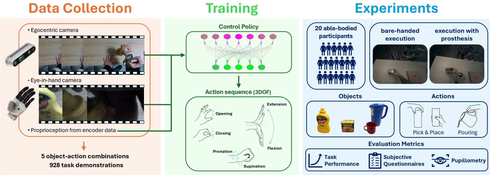
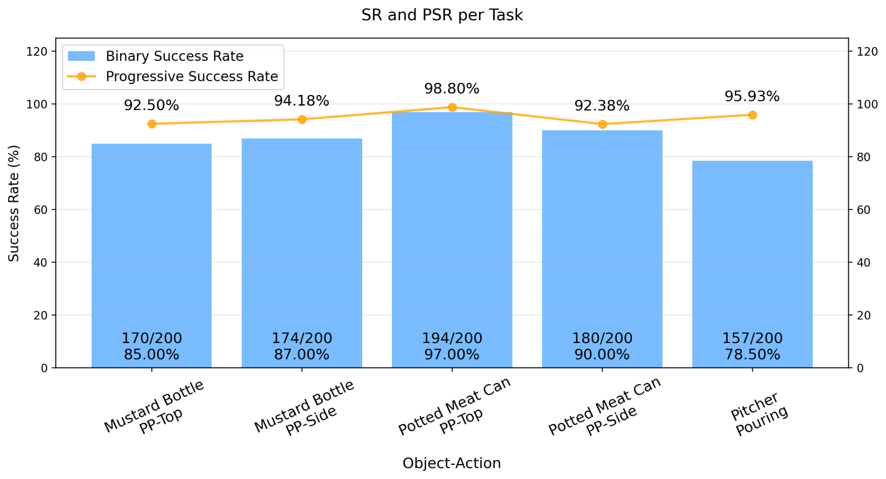

Watch
The system watches demonstrations through an egocentric camera and an eye-in-hand camera while also recording prosthetic proprioception and 3‑DoF commands.
Object grasping and manipulation with a prosthetic hand remain challenging for individuals with transradial limb loss, particularly when multiple prosthetic degrees of freedom must be coordinated. We present a framework for autonomous control of a prosthetic hand during grasping and manipulation tasks. Our approach leverages imitation learning to train a control policy that generates motor commands from egocentric images, eye-in-hand images and prosthetic proprioception. The user guides the hand through the workspace, while the policy autonomously controls the degrees of freedom required to complete the task. We collect demonstrations for five object-action combinations and evaluate the policy with 20 able-bodied participants. Across the evaluated tasks, the system achieves task-completion rates between 78.5% and 97%, with progressive success rates between 92.38% and 98.80%.
TL;DR: We train a single multimodal imitation-learning policy to autonomously control the wrist and fingers of the Hannes prosthetic hand during grasping and manipulation.
The system watches demonstrations through an egocentric camera and an eye-in-hand camera while also recording prosthetic proprioception and 3‑DoF commands.
A multimodal diffusion policy learns from the synchronized demonstrations to predict future wrist and finger commands.
The participant moves the prosthesis through space while the policy autonomously controls flexion-extension, pronation-supination and hand opening-closing.


Hover, focus or tap a card to learn more.
@unpublished{columbaro2026watch,
title = {Watch, Learn, Assist: Unlocking Autonomous
Prosthetic Manipulation via Imitation Learning},
author = {Columbaro, Martina and Vasile, Federico and
Boccardo, Nicolò and Natale, Lorenzo},
note = {Manuscript submitted to IEEE Transactions on Neural
Systems and Rehabilitation Engineering; under review},
year = {2026}
}